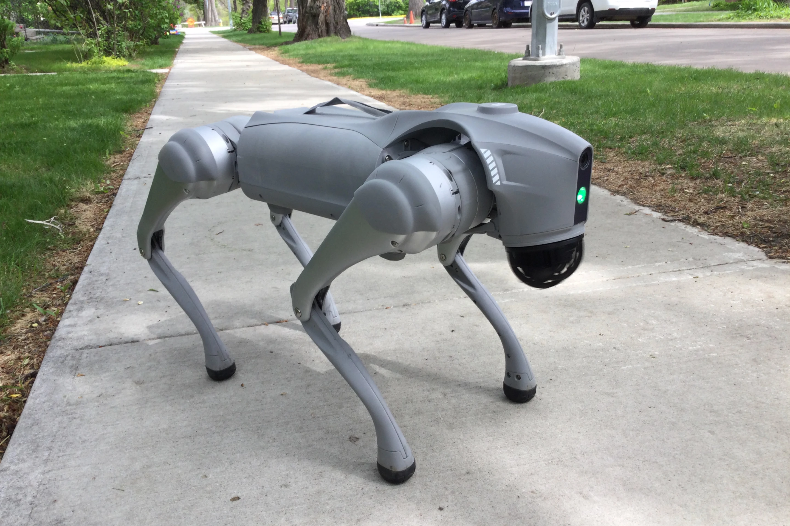

- Unitree Go2; karmaşık ortamlarda gelişmiş hareket kabiliyeti, algılama ve otonom navigasyon için tasarlanmış, kompakt ve çevik, dört ayaklı bir robottur. Dahili yapay zeka, gelişmiş lidar ve yüksek performanslı aktüatörlerle donatılmış olan bu robot; araştırma, denetim ve gerçek dünya robotik uygulamalarını destekler.
YAPİMCİSİ: Unitree Robotics
Yili:2023
KATEGORİ:Tüketici,Araştırma
Geri Dön